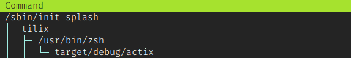

Crate informe[−][src]
Expand description
Informe
Este informe puede ser leido tanto en PDF (gracias a pandoc) como en HTML (gracias a rustdoc)
Para documentación especifica del código fuente que excede a este informe se puede consultar la documentación de la aplicación (en inglés).
Trabajo Práctico
Este trabajo práctico se forma por dos distintas implementaciones de un sistema de reservas de vuelos a procesar de manera concurrente:
-
La primera parte consiste de un servidor HTTP que responde reservas de vuelos, y para cada una levanta distintos hilos.
- El motor del servidor es actix-web
- Su código fuente se puede encontrar en src/threads
- El servidor se puede levantar con
cargo run --bin threadsy un ejemplo de un pedido de reserva escurl -i -d '{"origin":"EZE", "destination":"JFK", "airline":"AA", "hotel":true}' -H "Content-Type: application/json" -X POST http://localhost:8080/ - Esta implementación tiene pruebas que pueden ser ejecutadas con
cargo test --bin threadsy una prueba de carga para el servidor se puede ejecutar con./apache-ab-stresstest.shque utiliza la herramienta Apache ab
-
La segunda parte consiste en leer un archivo CSV con las distintas reservas de vuelo, y para estas ejecutar un sistema de actores que irán procesandolos.
- El framework de actores utilizados es actix
- Su código fuente se puede encontrar en src/actix
- El programa se puede ejecutar con
cargo run --bin actixque lee las reservas de un archivo CSV de prueba, o ejecutar concargo run --bin actix <archivo_de_vuelos>para proporcionar un CSV propio. Una fila de ejemplo del CSV esEZE,JFK,AA,true
-
Dentro de src/common se encuentran las funciones comunes a ambas implementaciones.
Primera implementación – Hilos
Implementar la aplicación utilizando las herramientas de concurrencia de la biblioteca standard de Rust vistas en clase: Mutex, RwLock, Semáforos (del crate std-semaphore), Channels, Barriers y Condvars.
La primera implementación del modelo es a base de hilos y de un servidor HTTP que está constantemente escuchando nuevas reservas.
Los hilos activos al estar el sistema escuchando por nuevos requests, y los hilos activos al estar procesando un solo request se pueden ver en las siguientes dos capturas del programa htop:

Hilos y funcionamiento
La función main en src/threads/main.rs levanta los distintos hilos y el servidor en sí.
-
Lo primero que hace es levantar el hilo
loggerel cual se encargará de escribir tanto por consola como en el archivo de log los mensajes que se van a ir recibiendo. Este hilo no es más que un típico problema productor-consumidor: contiene un canal (mpsc) que está constantemente escuchando mensajes que le puede mandar el sistema, y estos se vierten sobre un archivo de log. La implementación de canal y mensajes es para evitar que dos hilos accedan a la vez al recurso compartido (el archivo en sí). Este loop infinito se termina cuando el logger recibe que debe registrar un mensaje de finalización. -
Se procesa un archivo CSV de aerolíneas (configurable en el directorio
src/configs) que contiene los nombres de las aerolíneas y la cantidad de pedidos simultáneos que pueden tomar. -
Se inicializa la entidad de estadísticas, que va a ser accedida por cada pedido de vuelo, y por ende debe ser bien protegida frente a problemas de sincronización de hilos.
-
Después de esto se levanta el thread
http-serverque levantara al servidor de actix-web. Por detrás, actix-web levanta el hiloactix-server acy los N hilosactix-rt:workerque escuchan nuevos requests. Como explica en la documentación, esta cantidad de trabajadores puede ser configurada, y es por defecto la cantidad de CPUs en el sistema donde se ejecuta. Estos hilos no son manejados por nosotros, y su finalización se logra llamando a actix_web::Server::stop, el cual va a hacer un graceful shutdown del servidor (de estar procesando algo actualmente, esperará a que el pedido sea finalizado). -
Este servidor se crea con un
AppStateque es compartido por todos los hilos creados por actix-web y que contiene las distintas aerolíneas, la entidad de estadísticas de la aplicación y una referencia almpscdel logger. Tal como se explica en la documentación de actix-web, el estado debe estar seguramente compartido para que los hilos no entren en ningún tipo de problema de sincronía al acceder a este. -
El hilo principal pasa a estar escuchando activamente eventos del teclado, para poder imprimir las estadísticas de los vuelos procesados (al recibir la tecla
S) o para saber si comenzar el graceful shutdown (al recibir la teclaQ)
Reserva de vuelos
Una vez que ya tenemos todo el sistema inicializado, lo más importante es ver que sucede al recibir un request.
El servidor tiene un handler de POST a la ruta / donde se reciben vuelos en forma de archivos json que especifican el vuelo a reservar:
{
"origin": "EZE", // Aeropuerto de origen
"destination": "JFK", // Aeropuerto de destino
"airline": "AA", // Aerolínea, que debe ser una de las aerolíneas disponibles en el programa
"hotel": true // Indica si el pedido debe pasar por el servidor del hotel o no
}Luego de chequear que el aeropuerto sea válido, este handler llama a alglobo::reserve, la función con la lógica principal del programa (encontrada en src/threads/alglobo.rs). Lo que logra esta función es concurrentemente ejecutar ambos requests (al servidor de la aerolínea y al servidor del hotel) y esperar a que ambos terminen, y luego, devolver el resultado de ambos. En el caso de la reserva ser de solo vuelo, y no de hotel, no se manda este pedido adicional. Para esto, se levantan dos hilos (uno con el nombre de la aerolínea, como en nuestro ejemplo la aerolínea AA, y otro simplemente llamado hotel) que simulan ambos pedidos a los servers.
El servidor del hotel es único para todo el programa, y no tiene límites. Todos los pedidos pueden ir directamente a él y esperar la respuesta. La simulación es siempre exitosa, y el pedido solo consta de esperar un tiempo al azar de no más de un segundo y medio. Esta espera se simula con std::thread::sleep().
El servidor de la aerolínea solo puede atender N pedidos de vuelos simultáneamente. Esto se logra con un semáforo (std_semaphore::Semaphore) inicializado con su contador interno en la cantidad de pedidos que puede soportar esa aerolínea. Cada pedido que ingresa adquiere el semáforo (decrementando en uno el contador), una vez que finaliza el pedido se incrementa el contador nuevamente, para dar lugar al próximo hilo. Cada hilo solo puede tomar el semáforo si el contador interno es positivo.
La simulación de la aerolínea puede ser exitosa o fallida. Si el pedido es rechazado, el sistema espera N segundos para reintentarlo. Esta cantidad de segundos es configurable vía la variable de entorno RETRY_SECONDS.
El resultado final de la reserva entonces necesitará que ambos pedidos (hotel y aerolínea) hayan finalizado exitosamente. Una vez terminado, la función se encargará de agregar las estadísticas del vuelo. No se puede agregar las estadísticas ni finalizar el request si ambos threads no finalizaron, y eso se resuelve gracias a un monitor. Esta herramienta consiste de un mutex (std::sync::Mutex) y una condition variable (std::sync::Condvar) y nos brinda la posibilidad de esperar hasta que se cumpla una condición.
Una vez que se completa el pedido, se procede a agregar las estadísticas correspondientes. Esto incluye agregar el tiempo de procesamiento en las simulaciones, y la ruta solicitada, para luego poder reportar las estadísticas operacionales y las de negocio. Estas estadísticas están detrás de un lock de escritura y lectura, para evitar que haya problemas de sincronización entre distintos pedidos.
Entidades
-
La estructura principal del programa es la que representa pedidos de reservas de vuelos, FlightReservation. Esta estructura, en esta implementación, es des-serializable (con ayuda de serde) para poder ser recibida como un JSON en el cuerpo del
POST. Esta estructura entonces contiene los 4 atributos que requiere un vuelo (aeropuertos, aerolínea, y un indicador de hotel). -
La entidad que se encarga de registrar las estadísticas, Statistics es una estructura a la que los distintos hilos de reservas irán accediendo, y por ende hay que proteger el acceso a sus atributos con un lock. Los únicos atributos que contiene son un acumulador de tiempo de reservas, para poder calcular el tiempo promedio de procesamiento, y un
HashMapen donde se irán guardando todas las rutas (origen -> destino). Esta estructura contiene métodos para poder calcular e imprimir estas estadísticas. Los métodos de impresión son ejecutados por el usuario al escribir en la consola unaS. -
Las aerolíneas disponibles en el programa son simplemente un
HashMapdeclarado conpub type Airlines = HashMap<String, Arc<Semaphore>>que se generan a partir del archivo CSV de configuración. EsteHashMaptiene como clave el nombre de la aerolínea y como valor un semáforo, para lograr el rate limit de cada aerolínea. -
El logger es simplemente una función para escribir al archivo de log de la aplicación, pero encapsulado en un canal
mpscpara hacer que el acceso a este archivo sea ordenado. -
Estas estructuras globales del sistema (las aerolíneas disponibles y las estadísticas), junto al recibidor del logger componen el estado mutable compartido que se reparte entre todos los hilos de los pedidos de vuelos, AppState.
Segunda implementación – Actores
Implementar la aplicación basada en el modelo de Actores, utilizando el framework Actix.
La segunda implementación del programa es en base al modelo de actores. Esto implica que remodelemos el programa original (buscando reutilizar la mayor cantidad de código posible) y deleguemos a actix la creación de hilos del programa, olvidándonos de thread::spawn() y las herramientas tradicionales de concurrencia utilizadas en la implementación anterior, como los semáforos o los monitores.
A diferencia de la primera implementación, en vez de tener un servidor HTTP, sencillamente tenemos un archivo CSV (que puede ser pasado por argumento de línea de comando, o por defecto se utiliza uno de prueba propio) que contiene una lista de los pedidos de vuelos a reservar. La idea principal del programa es crear un sistema de actores, iterar este archivo, y por cada uno levantar actores que se encargarán de la reserva.
En esta captura de htop podemos ver que al correr el programa solo tenemos un hilo (el principal). Esto es porque ahora toda la concurrencia corre por parte de actix, y en vez de tener que sincronizar hilos entre sí, tengamos que ocuparnos de la sincronización entre actores. Levantar un actor es una operación mucho más liviana que levantar un hilo, haciendo que esta implementación sea menos intensiva en recursos que la anterior.

Funcionamiento y reservas
Lo primero que sucede en la función main de src/actix/main.rs es leer el archivo de vuelos y convertirlo en un vector de la estructura FlightReservation, que se reutiliza de la implementación anterior.
Luego, se crea el actor que se encarga de manejar las estadísticas de esta implementación. Este actor es el análogo a la estructura Statistics anterior, pero reimplementado para el modelo actual. Esta entidad recibe en su inicialización la cantidad total de vuelos que se procesarán en el transcurso del programa, para poder apagar el sistema una vez que se haya registrado todo vuelo.
Lo siguiente que sucede es que se procesa el archivo CSV de aerolíneas, pero en vez de usar un HashMap de semáforos, ahora buscamos hacer un HashMap donde cada aerolínea tenga una tupla. En esta tupla tenemos dos valores, el rate limit, y la cantidad de vuelos actualmente siendo procesados (inicialmente 0). Con este diccionario, el actor AirlineManager se encargará de nunca enviar requests por sobre el rate limit al actor Airline, que es el actor único utilizado para todas las aerolíneas. El último actor creado es el del hotel, el cual no tiene ningún tipo de rate limit.
Finalmente, esta función hará cada reserva solicitada, iterando los vuelos y levantando un actor para cada simulación de request (el request a la aerolínea irá a AirlineManager mientras que el del hotel irá a Hotel)
Actores y Mensajes
-
La estructura FlightReservation ahora se encapsula dentro InfoFlight, que es el mensaje que reciben los actores de las aerolíneas y del hotel.
-
InfoFlight no es más que un vuelo y un poco de metadata acerca de este: el tiempo en el que empezó a ser procesado (para luego poder calcular el tiempo final de procesamiento) y un indicador de si este vuelo es nuevo o es simplemente un reintento de un vuelo fallido en alguno de los requests
-
El actor Hotel va a ser el encargado de simular el procesamiento de los request que incluyan una reserva de hotel además de la del vuelo. Al igual que la primera implementación, el pedido consta de esperar un tiempo al azar de no más de un segundo y medio. Como el actor
Hotelsolo puede ejecutar un mensaje a la vez, para permitir la ejecución de otros pedidos en simultáneo se hace uso de los sleeps de tasks. Esto consiste de un llamado aactix::clock::sleepdentro de unBox::pinque le permite al handler devolver unResponseActFuture. Es decir que el actorHotelno espera a que el sleep se complete para poder procesar el siguiente mensaje, pero una vez que finaliza, a través de un callback sí se encarga de finalizar con el procesamiento. Como la simulación es siempre exitosa, cuando finaliza el sleep, simplemente envía sus estadísticas al actorStatistics. -
El actor AirlineManager cuenta con tres campos en su estructura: el
HashMappara identificar la cantidad máxima de requests que tiene permitido procesar cada aerolínea y la cantidad que está procesando en ese momento; la dirección del actorAirlinepara poder enviarle los pedidos de reserva; unHashMapcon una cola de vuelos que aún no se pueden procesar debido al rate limit de la aerolínea. Al contar con las colas de pedidos pendientes y el contador de pedidos ejecutándose, el manager resuelve las tareas de forma similar a un tradicional semáforo de concurrencia. El actor puede recibir dos tipos de mensaje:- Un mensaje
Pde tipo NewRequest en el que verifica si el rate limit de la aerolínea está disponible. Si lo está, lo procesa enviandoselo al actor Airline, y suma uno al contador. Si no esta disponible lo agrega a la cola de pedidos pendientes. - Un mensaje
Vde tipo FinishRequest que se encarga de restar en uno al contador y de verificar si hay algún pedido pendiente en la cola (y si lo hay, lo procesa).
- Un mensaje
-
Una vez que AirlineManager resuelve el rate limit, el InfoFlight se envía al actor Airline, el cual resolverá el vuelo de la misma manera que lo hacía Hotel (con un
sleepdentro deBox::pin). La única diferencia entre estos dos actores es que el de la aerolínea puede fallar. En este caso, el actor re-intentará el vuelo, enviándose a sí mismo el InfoFlight recibido (conactix::actor::AsyncContext::notify), pero marcando que es un reintento, así haciendo la espera del servidor simulado más larga (los segundos de penalización previos al reintento, y los segundos de la simulación). Una vez exitoso el pedido, se le notifica a AirlineManager con FinishRequest, para quie haga lugar a siguientes pedidos. -
El último actor del programa es StatsActor, el cual recibe tanto de Airline como de Hotel los requests exitosos, encapsulados en el mensaje Stat. Al recibir un mensaje, el actor se fija si el vuelo tiene todos sus requests (uno si es solo un vuelo, o dos si es un vuelo y un hotel) en un
HashMapinterno, y si es así, registra en elloggeral vuelo como finalizado. A diferencia de la implementación anterior, la manera de tener estadísticas periódicas es que cada N vuelos se impriman automáticamente (en vez de escuchar al teclado en un hilo aparte). Finalmente, si la cantidad total de vuelos procesados es igual a la cantidad recibida en la inicialización, el programa se dará por concluido y se apaga.